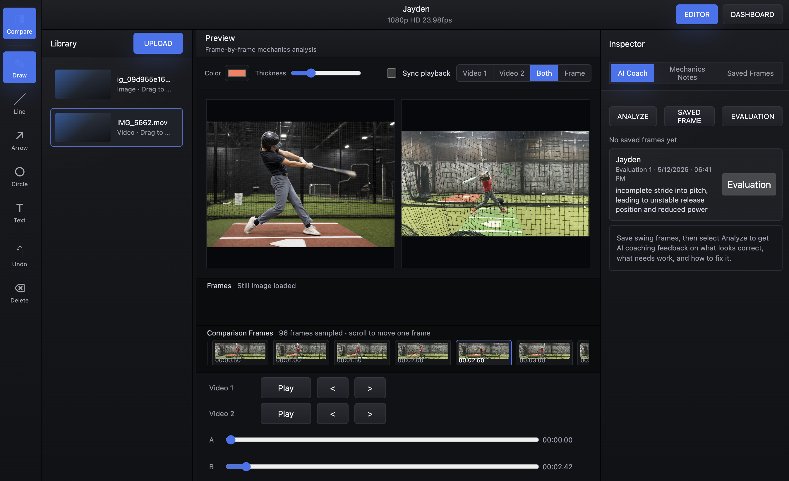
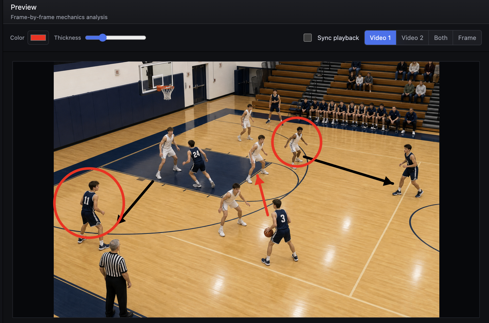
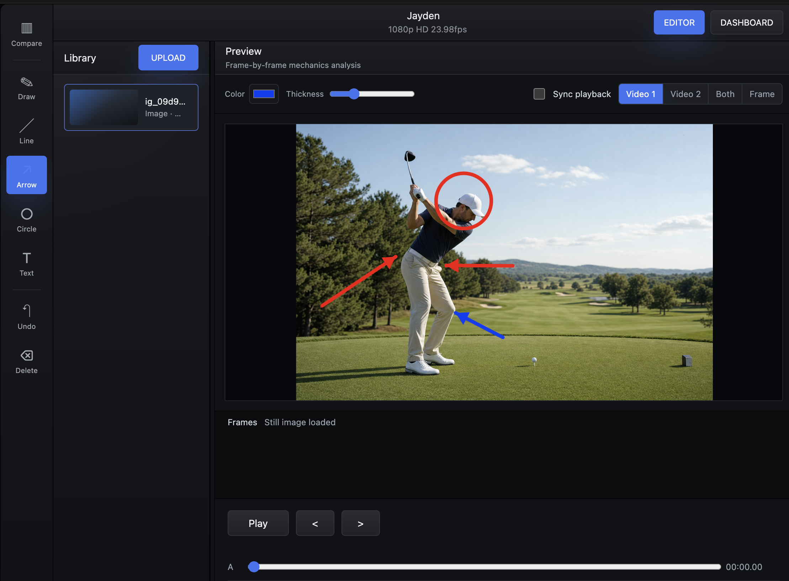

Upload
Add training videos or still images from any session.
DiamondFrame gives coaches, trainers, instructors, and athletes a focused video workspace for reviewing technique, marking key moments, comparing progress, and exporting clear session notes.

Keep the full review loop in one focused workspace.
Add training videos or still images from any session.
Pause, step frame by frame, and capture the exact moment that matters.
Draw lines, arrows, circles, freehand marks, and text notes directly on frames.
Save frames, compare progress, and export session reports for follow-up.
Everything a coach needs to turn movement footage into useful feedback.

Move through a clip precisely and capture key positions.
Use freehand marks, lines, arrows, circles, and text notes.
Organize captured moments by athlete, date, notes, and timestamp.
Review two clips side by side with independent or synced playback.
Export concise notes and saved image sets after a review.
Keep videos, frames, reports, and billing tied to each coach account.
Use DiamondFrame wherever technique, timing, posture, or repeatable movement matters.

Start with single-video analysis, then unlock comparison and exports when the workflow grows.
Monthly access for single-video analysis, uploads, and saved frames.
Yearly access with compare mode, unlimited uploads, reports, image sets, and exports.